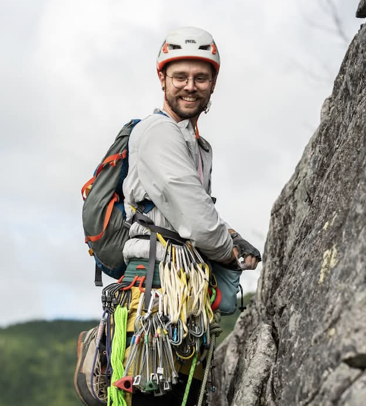

Antoine Théberge
PhD student in the VITAL of Université de Sherbrooke and the SCIL of Université de Sherbrooke. Most of my research and academic interests are centered around Reinforcement Learning, Diffusion MRI, Deep Learning and Tractography.
Links
Google Scholar
OpenReview
ORCID
GitHub
Conference notes
Publications as First Author
- Théberge, A., Descoteaux, M., & Jodoin, P. M. (2024, October). TractOracle: towards an anatomically-informed reward function for RL-based tractography. In International Conference on Medical Image Computing and Computer-Assisted Intervention (pp. 476-486). Cham: Springer Nature Switzerland.
- Théberge, A., Desrosiers, C., Boré, A., Descoteaux, M., & Jodoin, P. M. (2024). What matters in reinforcement learning for tractography. Medical Image Analysis, 93, 103085.
- Théberge, A., Desrosiers, C., Descoteaux, M., & Jodoin, P. M. (2021). Track-to-Learn: A general framework for tractography with deep reinforcement learning. Medical Image Analysis, 72, 102093.
Publications in review
- Théberge, A., El Yamani, Z., Barakovic, M., Magon, S., Yang, J. Y.-M., Descoteaux, M., Rheault, F., & Jodoin, P.-M. (2025, October). BundleParc: Consistent White Matter Bundle Parcellation without Tractography. Submitted to Medical Image Analysis
Publications as Co-Author
- Renauld, E., Boré, A., Poirier, C., Valcourt-Caron, A., Karan, P., Théberge, A., ... & Descoteaux, M. (2026). Tractography analysis with the scilpy toolbox. Aperture Neuro, 6.
- Levesque, J., Théberge, A., Descoteaux, M., & Jodoin, P. M. (2025). Exploring the robustness of TractOracle methods in RL-based tractography. Medical Image Analysis, 103743.
- Zhang, F., Théberge, A., Jodoin, P. M., Descoteaux, M., & O’Donnell, L. J. (2025). Think deep in the tractography game: deep learning for tractography computing and analysis. Brain Structure and Function, 230(6), 100.
- Edde, M., Theaud, G., Dumont, M., Théberge, A., Valcourt‐Caron, A., Gilbert, G., ... & Descoteaux, M. (2023). High‐frequency longitudinal white matter diffusion‐and myelin‐based MRI database: Reliability and variability. Human Brain Mapping, 44(9), 3758-3780.
- Renauld, E., Théberge, A., Petit, L., Houde, J. C., & Descoteaux, M. (2023). Validate your white matter tractography algorithms with a reappraised ISMRM 2015 Tractography Challenge scoring system. Scientific Reports, 13(1), 2347.
- Rheault, F., Schilling, K. G., Valcourt‐Caron, A., Théberge, A., Poirier, C., Grenier, G., ... & Landman, B. A. (2022). Tractostorm 2: Optimizing tractography dissection reproducibility with segmentation protocol dissemination. Human Brain Mapping, 43(7), 2134-2147.
- Anctil-Robitaille, B., Théberge, A., Jodoin, P. M., Descoteaux, M., Desrosiers, C., & Lombaert, H. (2022). Manifold-aware synthesis of high-resolution diffusion from structural imaging. Frontiers in Neuroimaging, 1, 930496.
- Edde, M., Theaud, G., Dumont, M., Théberge, A., Valcourt-Caron, A., Magon, S., & Descoteaux, M. (2022). Measures of reliability in high frequency longitudinal white matter multi-shell diffusion and inhomogeneous magnetization transfer database. ISMRM 2022, 4455.
Conference Abstracts
- Théberge, A., Jodoin, P. M., Yang, J., Descoteaux, M. & Rheault, F. (2025). BundleParc: automatic bundle parcellation in tumor data. In International Society for Tractography conference.
- Théberge, A., El Yamani, Z., Rheault, F., Descoteaux, M. & Jodoin, P. M. (2025). LabelSeg: Automatic Tract Labelling Without Tractography. In ISMRM Workshop on 40 Years of Diffusion: Past, Present & Future Perspectives.
- Théberge, A., Poirier, C., Jodoin, P. M., & Descoteaux, M. (2022). Incorporating Anatomical Priors into Track-to-Learn. In ISMRM Diffusion Workshop: from research to clinic.
- Théberge, A., Desrosiers, C., Jodoin, P. M., & Descoteaux, M. (2022). The do's and don'ts of reinforcement learning for tractography. In Medical Imaging with Deep Learning.
- Théberge, A., Desrosiers, C., Jodoin, P. M., & Descoteaux, M. (2021). Track-To-Learn: A general framework for tractography with deep reinforcement learning. In International Society for Magnetic Resonance in Medicine Conference 2021.
Education
- PhD in Computer Science, Université de Sherbrooke, 2021-2026
- M.Sc in Computer Science, Université de Sherbrooke, Mention of excellence, 2018-2021
- B.Sc in Computer Science, Université de Sherbrooke, 2015-2018
- Collegiate Degree in Software Engineering, Cégep Édouard-Montpetit, 2012-2015
Scholarships & Awards
- MITACS Globalink research grant, MITACS, 2025
- ISMRM Research exchange award, ISMRM, 2025
- Subventions de voyage pour conférences UNIQUE, Centre UNIQUE, 2024
- Bourses de congrès Neurosciences Sherbrooke, Neurosciences Sherbrooke, 2024
- Bourses du Programme de mobilité internationale et de courts séjours à l'extérieur du Québec (PMICSE) - Volet recherche, Université de Sherbrooke, 2024
- Bourse d'implication, REMDUS, 2023
- Fonds de recherche du Québec – Nature et technologies (FRQNT) # 320196, 2022
- Bourses étudiantes pour le soutien des travaux de recherche, Centre d’imagerie médicale de l’Université de Sherbrooke (CIMUS) et l’Axe d’imagerie médicale (AIM) du Centre de recherche du CHUS (CRCHUS), 2020
- Bourses étudiantes pour le soutien des travaux de recherche, Centre d’imagerie médicale de l’Université de Sherbrooke (CIMUS) et l’Axe d’imagerie médicale (AIM) du Centre de recherche du CHUS (CRCHUS), 2019
- Direction Recherche, Université de Sherbrooke, 2018
Scientific outreach
- Des réseaux de neurones *artificiels* ? - Bistro Brain, winter 2023
- Apprendre à reconstruire (virtuellement) le cerveau humain - 11e Journée scientifique Neurosciences Sherbrooke, Sherbrooke, Québec
- Des mythes sur le cerveau humain - Bistro Brain, fall 2022
- L’intelligence artificielle pour comprendre le cerveau humain - Bistro Brain, fall 2021
- Reconstruire la matière blanche avec l'apprentissage par renforcement - Colloque REPARTI 2021 (virtuel)
- Introduction to Machine Learning, from Linear Regression to Neural Networks (French), spring 2019
Conferences & Workshops (Organization & Session Roles)
- ISMRM Workshop on 40 Years of Diffusion (2025) Moderator. Kyoto, Japan
- ISMRM Workshop on 40 Years of Diffusion (2025) Organizing committee (Educational Sessions; “AI & Big Data”). Kyoto, Japan
- Forum de la Recherche (2023) Organizing committee, Treasurer. Sherbrooke, Canada
- Forum de la Recherche (2021) Organizing committee. Sherbrooke, Canada
- Medical Imaging and Deep Learning (MIDL) Workshop (2021) Session chair. Lübeck, Germany
- Symposium International Imaginez l’Imagerie (2020) Organizing committee. Université de Sherbrooke
- Medical Imaging and Deep Learning (MIDL) Workshop (2020) Volunteer. Montréal, Canada
- Cabane IO (2019) Organizing committee. Sherbrooke, Canada
- JDIS Games 2019 (2019) Organizing committee. Université de Sherbrooke, Canada
Student associations
- Vice-président (2024) at the Regroupement étudiant des chercheurs et chercheuses en sciences de l'Université de Sherbrooke (RECSUS).
- Président (2023) at the Regroupement étudiant des chercheurs et chercheuses en sciences de l'Université de Sherbrooke (RECSUS).
- Vice-président (2022) at the Regroupement étudiant des chercheurs et chercheuses en sciences de l'Université de Sherbrooke (RECSUS).
- Représentant d'informatique et responsable des communications (2021) at the Regroupement étudiant des chercheurs et chercheuses en sciences de l'Université de Sherbrooke (RECSUS).
Teaching and TA work
- IFT780: Neural networks, winter 2022 (Course instructor)
- IMN530: Reconstruction et analyse d’images médicales, fall 2024 (TA)
- IFT603: Machine Learning, fall 2024 (TA)
- IFT603: Machine Learning, fall 2023 (TA)
- IFT603: Machine Learning, winter 2023 (TA)
- IFT780: Neural networks, winter 2023 (TA)
- IFT603: Machine Learning, fall 2022 (TA)
- IFT199: Introduction to programming, fall 2021 (TA)
- IFT603: Machine Learning, fall 2021 (TA)
- IFT630: Concurent Processes and Parallelism, summer 2021 (TA)
- IFT615: Artificial Intelligence, summer 2021 (TA)
- IFT615: Artificial Intelligence, spring 2021 (TA)
- IFT603: Machine Learning, spring 2021 (TA)
- IMN530: Reconstruction et analyse d’images médicales, fall 2020 (TA)
- IFT603: Machine Learning, fall 2020 (TA)
- IFT615: Artificial Intelligence, summer 2020 (TA)
- IFT603: Machine Learning, spring 2020 (TA)
- IFT603: Machine Learning, fall 2019 (TA)
- IFT630: Concurent Processes and Parallelism, summer 2019 (TA)
- IFT615: Articifial Intelligence, summer 2019 (TA)
- IFT615: Articifial Intelligence, spring 2019 (TA)
- IFT320: Operating Systems, fall 2017 (TA)
Work experiences & Internships
- Tree planter, Rhino Reforestation
May 2018 - July 2018 - QA Developper, Outbox Technology
May 2017 - August 2017 - Front-End Developper, Outbox Technology
September 2016 - December 2016 - Web Developper, Morgan Stanley
January 2016 - April 2016 - Web Developper, Pardeux e-Learning
March 2015 - November 2015
Competitions
- Northsec 2020, team Clickesti
- CS Games 2020, coach and mentor
- Nothsec 2019, JDIS Team
- JDIS Games 2019, organizer
- CS Games 2019, coach and mentor
- Coveo Blitz 2019, team PerchaUDES
- CS Games 2018, team romano
- Google Games 2018, team Ba$$in
- Coveo Blitz 2018, team Laser Raptors
- CS Games 2017, team Ramsay